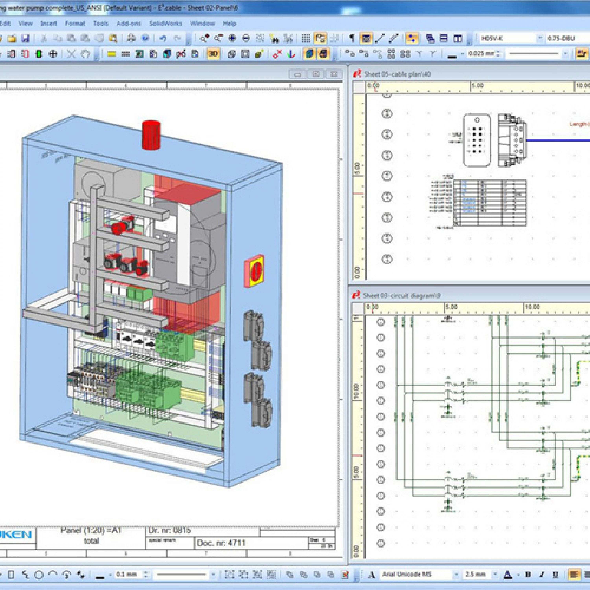

Hálózatok tervezése és szimulációja
Ez az oldal a Hálózatok tervezése és szimulációja című tantárgy tematikáját tartalmazza.
Feladata és célja:
Villamos hálózatok számítógépes tervezési alapismeretek elsajátítása.
Tematika
- Villamos hajtások osztályozása. Terhelő nyomatékok matematikai leírása.
- Munkapont stabilitása. Motorok melegedése.
- Szigetelési osztályok. Szabványos terhelések.
- Motorok kiválasztása működési mód, építési alak, védettség, hűtési módok, robbanás biztos kiépítés, elektromágneses kompatibilitás, vezérlés és kommunikáció szerint.
- Motorok adattáblája és katalógus adatok.
- Váltakozó áramú motorok vektoros leírása. Park-vektor.
- Mezőorientált szabályozás: állórész fluxus, légrés fluxus, forgórész fluxus szerint.
- Közvetlen és közvetett mezőorientáció.
- Impulzusszélesség modulált áramvektor szabályozott mezőorientált frekvenciaváltó aszinkron motor villamos hajtásához.
- Áramirányítós szinkron motor.
- Egyenáramú motorok tirisztoros és tranzisztoros villamos hajtásai.
- Generátoros féküzem.
- Villamos hajtások dinamikája.